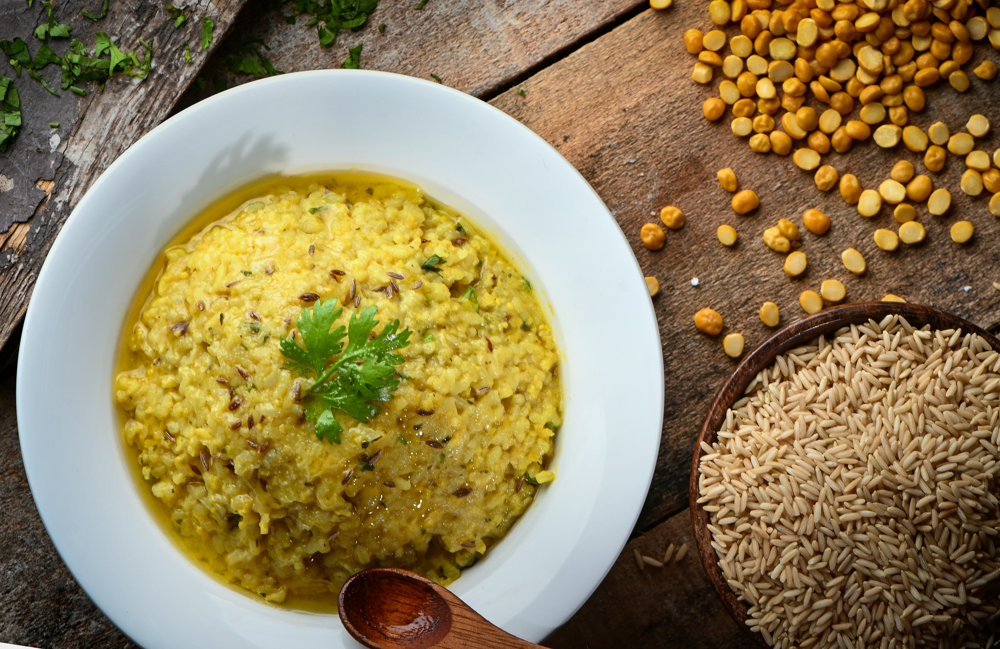

Home
Instant Pot Dal Recipe

Description
This recipe was passed down from my grandmother. Normally, you would simmer the dal for hours,
but I have found this too time-consuming. It is eqully as delicious and even easier in an
Instant Pot.
Ingredients
- 1 cup of washed dal, consisting of an even mix of these 4 different types of dal:
- Chana dal
- Toor dal
- Masoor dal
- Moong dal
- 1 stick of cinnamon
- 1 tsp of black mustard seeds
- 3 cloves
- 2 cardomom pods
- a thumb-sized piece of ginger
- 1 tsp turmeric
- 1 onion
- 2 cloves of garlic
- 3-4 chillies, depending on heat wanted
- 1 sprig curry leaves
- 1 tbsp vegetable oil
- 1 tsp salt
- Coriander to garnish (optional).
Steps
- Grind the ginger, onion, garlic, chillies and turmeric in a blender until smooth.
- Heat the oil in a large wok on high heat for a minute. Then fry the
cinnamon, mustard seeds, cloves and cardamom in the pan for 30 seconds.
- Add the ground up paste to the pan and fryfor 10 minutes or until the oil starts bleeding through.
- Fry the curry leaves for 30 seconds.
- Pour the paste into your Instant Pot. Add the dal, along with salt and 4 cups water. Set the Instant Pot
to run for 45 minutes on high pressure.
- Let Instant Pot depressurise by itself. Garnish dal with coriander if desired and serve with rice.